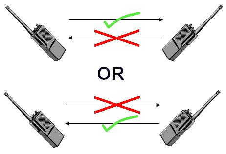

Medios de comunicación cerrados
1 - Introducción al tema redes
1.1 - Medio de comunicación
- Emisor es quien envía un mensaje
- Receptor es quien se le envía mensaje (quien lo recibe)
- Canal es el medio físico por el cual se transmite el mensaje
- Código es la forma que toma el mensaje mientras es transmitido por el canal
- Retroalimentación es un proceso en el que el emisor y el receptor intercambian sus roles.
Los medios de comunicación se clasifican de acuerdo a los roles que pueden tomar las partes.
Full-duplex

Half-duplex
Simplex

1.2 - Tasas de transferencia
A la tasa de transferencia se le conoce vulgarmente como velocidad subida o descarga. Dado que velocidad es una magnitud física resultado de dividir desplazamiento entre tiempo transcurrido, se le da el nombre tasa de transferencia al resultado de dividir la cantidad de datos transmitidos entre el tiempo transcurrido.
Ejemplo
Se descarga 1GB, en una hora.
1 GB es la cantidad de datos transmitidos y 1 hora es la tiempo que demora en transmitirse.
Si bien es correcto decir que la descarga se realizó a 1GB/h, para facilitar la comparación
entre tasas de transferencia, se usan mayormente las unidades sobre segundos.
- Como una hora son 60 minutos, y un minuto son 60 segundos, una hora son 3600 segundos.
- 1GB son 1024MB, si en una hora se descargaron 1024 MB, en un minuto se descargaron 17MB.
- 1MB son 1024KB, entonces 17MB son 17408KB
- Si en un minuto se descagan 17408KB, en un segundo se descargan 290KB